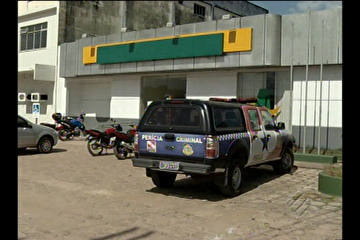

Em São Paulo, os cinco policiais presos suspeitos de assassinar um homem no sábado em São Paulo confessaram o crime à Polícia Civil. De acordo com os depoimentos, dois policiais atiraram contra o servente.
A Polícia Civil diz não ter dúvidas de que o servente de pedreiro Paulo Batista do Nascimento, de 25 anos, foi executado por policiais militares. Eles foram ouvidos na terça-feira (13), na capital.
Os depoimentos ocorreram no Departamento de Homicídios e de Proteção à Pessoa. Foi com base neles que a Polícia Civil de São Paulo disse que já sabe quem são os policiais militares que atiraram no servente.
Para a polícia, o primeiro tiro teria sido disparado pelo soldado Marcelo de Oliveira Silva, quando o servente estava atrás do carro da PM. Marcelo aparece em posição de tiro nas imagens gravadas por um cinegrafista amador, que se assusta no momento e não grava a cena. É possível apenas ouvir o barulho do disparo.
De acordo com os depoimentos, Paulo tentou correr e foi baleado pela segunda vez, também pelo soldado Marcelo. A câmera não mostra, mas dá para ouvir o segundo tiro.
Em seguida o rapaz foi colocado no carro e lá dentro teria sido atingido pelo terceiro disparo. Para a polícia, o autor foi o soldado Jailson Pimentel de Almeida.
O advogado do tenente da PM Halstons Chen, que também foi preso, disse que quando o tenente chegou ao local da ocorrência, o servente já tinha levado um tiro.
"Quando o tenente já chega, ele já está baleado. Ele sai correndo e depois ele é interceptado, eles tentam colocar na viatura, o tenente tenta socorrer a todo instante e quando ele vai abrindo o trânsito para socorrer começa uma gritaria, ele tenta se debater novamente, gritando e ele escuta outro disparo", afirmou o advogado José Miguel da Silva Jr.
Para a polícia, a versão apresentada inicialmente pelos PMs é uma farsa. No boletim de ocorrência eles haviam dito que o corpo do servente foi encontrado em uma rua.
"O policial apresenta uma ocorrência e a polícia, na investigação, descobre que aquilo lá foi falso. Esse policial vai responder criminalmente e vai ser expulso da polícia. O que é importante é que a sociedade saiba que a instituição não compactua com crime. Quando um policial comete crime ele está agindo pior que bandido", afirma Marcos Carneiro Lima, delegado-geral de polícia.
A polícia já possui pistas das quadrilhas que realizaram os assaltos a três agências bancárias no nordeste do Pará na semana passada. Para o Sindicato dos Bancários, falta mais investimentos em segurança.
Segundo Rosalina Amorim, presidente do Sindicato dos Bancários, há uma grande necessidade de ampliar a segurança nos municípios do interior do estado.
Somente em 2011, este ano foi registrado mais de 30 assaltos a bancos do estado. Os três últimos aconteceram no nordeste paraense na semana passada. Um deles ocorreu a 500 metros de um batalhão da Polícia Militar.
Em Santa Izabel (PA), na madrugada da última quinta-feira (15), os bandidos entraram em uma agência, arrombaram a porta que dá acesso ao interior do banco, com o auxílio de um maçarico, eles abriram o cofre e levaram todo o dinheiro. Três dias antes, em Capitão Poço (PA), os bandidos usaram explosivos para ter acesso a agência. Um carro que estava na garagem do banco foi destruído. Os assaltantes também atacaram o quartel da Polícia Militar.
No dia anterior o assalto ocorreu em uma agência de São Miguel do Guamá (PA), os bandidos cavaram um buraco para ter acesso ao interior do banco e usaram maçaricos para abrir o cofre e levar o dinheiro. A polícia ainda investiga o caso. Nesta semana uma equipe de policiais foi aos interiores do estado para tentar desvendar os crimes. Nas investigações, foram notadas algumas semelhanças entre dois dos três casos.
Segundo o delegado do interior Sílvio Maués, os indícios são de que uma quadrilha atuou em Capitão Poço e outra quadrilha teria realizado os dois crimes restantes nos outros municípios.